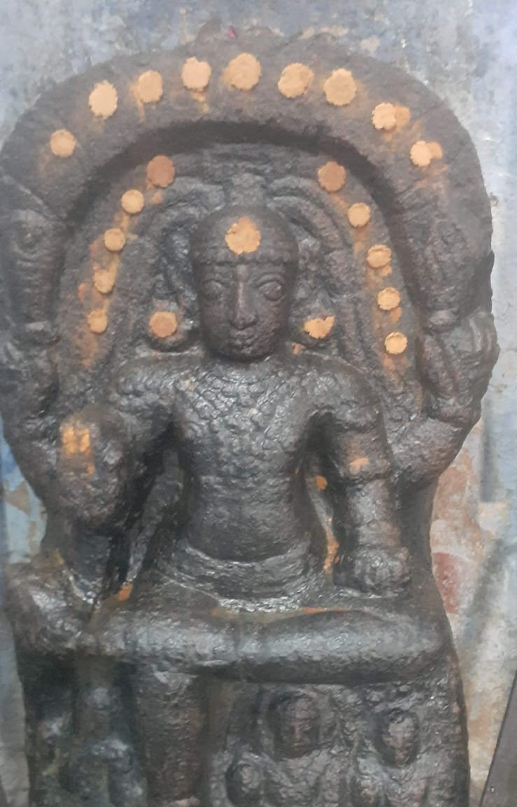

திருநீலகண்டேஸ்வரர் திருக்கோயில் Thiruneelakandeshwarar Temple
தளவாய்பட்டிணம், தாராபுரம், திருப்பூர் மாவட்டம் Dalavoipattinam, Dharapuram, Tiruppur District
ஒவ்வொரு வியாழக்கிழமையும் மேதா தட்சிணாமூர்த்தியை வழிபட பக்தர்கள் கூடும் பழமை வாய்ந்த சிவாலயம். An ancient Siva temple where devotees gather every Thursday to worship Lord Medha Dakshinamoorthy.
அருள்மிகு அகிலாண்டேஸ்வரி உடனுறை திருநீலகண்டேஸ்வரர் திருக்கோயில் Arulmigu Sri Akilandeswari Samedha Sri Thiruneelakandeshwarar Temple
கிழக்கு நோக்கி அருளும் குரு A Guru who faces east
சிவன் கோயில்களில் தட்சிணாமூர்த்தி பொதுவாகத் தெற்கு நோக்கியே அருள்பாலிப்பார். “தட்சிணம்” என்றால் தெற்கு; அதுவே அவர் பெயருக்குக் காரணம். குரு பகவான் கிழக்கு நோக்கி எழுந்தருளியிருக்கும் தலங்கள் மிகவும் அரிது. தளவாய்பட்டிணத்தில் மேதா தட்சிணாமூர்த்தி கிழக்கு நோக்கி அருள்பாலிக்கிறார்.
In Shiva temples, Dakshinamoorthy is usually seen facing south. His name comes from dakshina, the south. Shrines where the Guru faces east are rare. At Dalavoipattinam, Lord Medha Dakshinamoorthy faces east.
கிழக்கு என்பது சூரியன் உதிக்கும் திசை; மரபில் ஒளிக்கும் அறிவுக்கும் உரிய திசையாகக் கருதப்படுகிறது. கிழக்கு நோக்கிய குருவை வழிபடுவதால் கல்வி, ஞானம், திருமணத் தடை நீக்கம், தொழில் முன்னேற்றம் ஆகியவை கிடைக்கும் என்று பக்தர்கள் நம்புகின்றனர்.
East is the direction of the rising sun, and tradition links it with light and knowledge. Devotees believe that praying to a Guru who faces east helps with learning, wisdom, delays in marriage, and progress at work.
சிவகங்கை மாவட்டம், பட்டமங்கலம் தட்சிணாமூர்த்தி கோயில், கிழக்கு நோக்கிய தட்சிணாமூர்த்திக்குப் பெயர்பெற்ற மற்றொரு தலம்.
The Dakshinamoorthy temple at Pattamangalam in Sivaganga district is another well-known shrine where he faces east.

ஒவ்வொரு வியாழக்கிழமையும் குரு வழிபாடு Guru worship, every Thursday
இத்திருக்கோயிலில் ஒவ்வொரு வியாழக்கிழமையும் குரு பகவானுக்கு விசேஷ அபிஷேகம், முல்லை மலர் அர்ச்சனை மற்றும் விசேஷ அலங்கார வழிபாடுகள் நடைபெறுகின்றன. ஞானம், கல்வி வெற்றி, குரு தோஷம் உள்ளிட்ட கிரகத் தடைகளிலிருந்து விடுபடவும் வேண்டி பக்தர்கள் வருகின்றனர்.
Every Thursday the temple holds special abhishekam, jasmine archanai and alankaram for Lord Medha Dakshinamoorthy (Guru Bhagavan). Devotees come to pray for wisdom, success in studies, and relief from Guru dosha and other planetary difficulties.
வியாழக்கிழமை திறந்திருக்கும் நேரம்: காலை 5:00 முதல் மதியம் 12:00 வரை; பிற்பகல் 3:00 முதல் மாலை 6:00 வரை. Open on Thursdays: 5:00 am to 12:00 noon, and 3:00 pm to 6:00 pm.
16 வார நெய் தீப வழிபாடு The 16-week ghee lamp vazhipadu
குறிப்பாக, இங்கு நடைபெறும் “16 வார வியாழக்கிழமை நெய் தீப வழிபாடு” மிகவும் பிரசித்தி பெற்றது. பக்தர்கள் சங்கல்பம் செய்துகொண்டு, தொடர்ந்து 16 வியாழக்கிழமைகள் குரு பகவானுக்கு நெய் தீபமேற்றி மனமுருகி வேண்டிக்கொள்கின்றனர். இந்த வழிபாட்டை முடித்த பலர் தங்கள் வேண்டுதல் நிறைவேறியதாகப் பகிர்ந்துகொள்கின்றனர்.
This is the temple’s best-known prayer. Devotees take a sankalpam and light ghee lamps before Lord Dakshinamoorthy on 16 consecutive Thursdays. Many who complete the 16 weeks have shared that their prayers were answered.
- திருமணத் தடை நீங்கDelays in marriage (Vivaha prapthi)
- குழந்தைப் பேறு வேண்டிA child (Santhana bhagyam)
- வேலை, வியாபாரத் தடைகள் நீங்கObstacles in career and business
வழிபாட்டைத் தொடங்கும் முறையை அறிய கோயிலை அழைக்கவும்: நல்லசாமி குருக்கள் +91 94434 61317 அல்லது சுவாமிநாத சிவம் +91 88701 20129
To learn how to begin, call the temple: Nallasamy Gurukkal +91 94434 61317 or Swaminatha Sivam +91 88701 20129
உங்கள் 16 வியாழக்கிழமைகளைக் கணக்கிடுங்கள் Keep count of your 16 Thursdays
ஒவ்வொரு வியாழன் தீபம் ஏற்றிய பின் அந்த விளக்கைத் தொடுங்கள். After each Thursday’s lamp, tap that lamp to light it here.
இந்தக் கணக்கு இந்த தொலைபேசியில் மட்டும் சேமிக்கப்படும். கோயிலுக்கு அனுப்பப்படாது.Saved on this phone only. It is not sent to the temple.
திருக்கோயில் அறிமுகம் About the temple
திருப்பூர் மாவட்டம், தாராபுரம் வட்டம், தளவாய்பட்டிணத்தில் அமைந்துள்ள பழமை வாய்ந்த அருள்மிகு அகிலாண்டேஸ்வரி உடனுறை திருநீலகண்டேஸ்வரர் திருக்கோயில் (தளவாய் குரு ஸ்தலம்) உங்களை அன்புடன் வரவேற்கிறது. ஈசனின் அருளோடு, பிரசித்தி பெற்ற தென்திசை கடவுளாம் மேதா தட்சிணாமூர்த்தி (குரு பகவான்) அருள்பாலிக்கும் புண்ணிய க்ஷேத்திரம் இதுவாகும்.
Arulmigu Sri Akilandeswari Samedha Sri Thiruneelakandeshwarar Temple is an ancient Siva temple at Dalavoipattinam in Dharapuram Taluk, Tiruppur District. It is regarded as a parihara sthalam and is especially revered for its shrine of Lord Medha Dakshinamoorthy (Guru Bhagavan).
- மூலவர்Main deities
- திருநீலகண்டேஸ்வரர், அகிலாண்டேஸ்வரி அம்மன்Lord Thiruneelakandeshwarar (Siva) and Goddess Akilandeswari
- சிறப்புச் சன்னதிSpecial shrine
- மேதா தட்சிணாமூர்த்தி (குரு பகவான்)Lord Medha Dakshinamoorthy (Guru Bhagavan)
- திசைDirection
- குரு பகவான் கிழக்கு நோக்கி அருள்பாலிக்கிறார்The Guru faces east, which is rare
- வாராந்திர சிறப்புEvery Thursday
- குரு அபிஷேகம், அலங்காரம், அர்ச்சனைGuru abhishekam, alankaram and archanai
- சிறப்பு வழிபாடுSpecial prayer
- 16 வார வியாழன் நெய் தீப பிரார்த்தனை16-week Thursday ghee lamp prayer
- அமைவிடம்Location
- தாராபுரம் – உடுமலைப்பேட்டை சாலை, தாராபுரத்திலிருந்து 9 கி.மீ.Dharapuram to Udumalpet route, 9 km from Dharapuram
இக்கோயிலைத் தம்முடையதாகக் கருதும் ஊர்கள் The villages that call this temple their own
ஆவணங்களில் இக்கோயில் யாருக்கும் சொந்தமில்லை; உணர்வில் இங்கு வழிபடும் அனைவருக்கும் சொந்தம். தளவாய்பட்டிணம் ஊராட்சியின் இந்த எட்டு சிற்றூர்களின் குடும்பங்கள் நீண்டகாலமாகத் தங்கள் நன்றி, வேண்டுதல், கவலைகளுடன் அருள்மிகு திருநீலகண்டேஸ்வரரையும் அகிலாண்டேஸ்வரியையும் நாடி வருகின்றன. இது சட்டப்படியான உரிமை அல்ல; நம்பிக்கையாலும் பற்றாலும் பிணைந்த உறவு.
On paper, this temple belongs to no one. In spirit, it belongs to everyone who prays here. The families of these eight hamlets of the Dalavoipattinam Gram Panchayat have long come to Sri Thiruneelakandeshwarar and Sri Akilandeswari with their thanks, their vows and their worries. This is not ownership in any legal sense. It is a bond of faith and belonging.
- அய்யம்பாளையம்Ayyampalayam
- சென்னாக்கல்பாளையம்Sennakkalpalayam
- நரசிங்காபுரம்Narasingapuram
- தளவாய்பட்டிணம்Dalavoipattinam
- பஞ்சபட்டிPanchapatti
- பாப்பையன்புதூர்Pappaiyanputhur
- திருமலைபாளையம்Thirumalaipalayam
- ஊத்துப்பாளையம்Uthupalayam
அருகிலுள்ள ஊர்களிலிருந்தும், உலகெங்கிலிருந்தும் வரும் பக்தர்களும் இந்தக் குடும்பத்தின் அங்கமே. Devotees from neighbouring villages and from across the world are just as much a part of this family.
கல்வெட்டுகள் கூறும் தளவாய்பட்டிணம் Dalavoipattinam in stone inscriptions
தமிழ்நாடு அரசு தொல்லியல் துறையின் திருப்பூர் மாவட்டக் கல்வெட்டுத் தொகுப்பில் தளவாய்பட்டிணத்தின் நான்கு தமிழ்க் கல்வெட்டுகள் பதிவாகியுள்ளன. இவை 12 முதல் 14-ஆம் நூற்றாண்டு வரை இவ்வூர்க் கோயில்களுக்கு நிலமும் விளக்கும் கொடையாக வழங்கப்பட்டதைக் காட்டுகின்றன. அதாவது, எழுநூறு ஆண்டுகளுக்கும் மேலாக இவ்வூர் வழிபாட்டுக்கு உரிய இடமாக இருந்து வருகிறது.
The Tamil Nadu Department of Archaeology's survey of Tiruppur District records four Tamil inscriptions from Dalavoipattinam. They show gifts of land and lamps to the village's temples between the 12th and early 14th centuries, so worship here goes back more than 700 years.
-
12-ஆம் நூற்றாண்டு12th century
வரதராசப் பெருமாள் கோயில், வாயில் படிக்கால்Varadaraja Perumal temple, doorway step
பாண்டிய மன்னன் வல்லப தேவரின் ஆட்சிக் காலத்தைச் சேர்ந்தது. செயங்கொண்ட சோழ விண்ணகர ஆழ்வாருக்கு நிலம் கொடுத்த செய்தியைக் கூறுகிறது. கல்வெட்டுச் சிதைந்துள்ளது.
From the reign of the Pandya king Vallabha Deva. It records a gift of land to the deity Seyangonda Chola Vinnagar Alvar. The inscription is damaged.
-
13-ஆம் நூற்றாண்டு13th century
வரதராசப் பெருமாள் கோயில், வடக்குச் சுவர்Varadaraja Perumal temple, north wall
துண்டுக் கல்வெட்டு. நாயனார் தேவநாயகப் பெருமாளுக்கான கொடையைப் பற்றிய குறிப்புகள் எஞ்சியுள்ளன.
A fragment. The surviving lines refer to a gift for Devanayaka Perumal.
-
கி.பி. 13091309 CE
பிடாரி அம்மன் கோயில், தெற்குக் குமுதம்Pidari Amman temple, southern base moulding
கொங்குப் பாண்டிய மன்னன் சுந்தர பாண்டியனின் 24-ஆம் ஆட்சி ஆண்டு. வீரசோழன் திருமடைவிளாகத்தைச் சேர்ந்த கைக்கோளரான கண்டன் என்பவர், பிடாரி அம்மனுக்குச் சந்தியா தீபம் ஏற்றப் பொன் அளித்த செய்தி. கல்வெட்டுச் சிதைந்துள்ளது.
In the 24th regnal year of the Kongu Pandya king Sundara Pandiyan. A Kaikkolar man named Kandan, of the Veerasolan Thirumadaivilagam settlement, gave gold to keep an evening lamp burning before Pidari Amman. The inscription is damaged.
-
காலம் குறிப்பிடப்படவில்லைDate not recorded
இந்தத் திருக்கோயிலில்In this temple
திருநீலகண்டேசுவரர் கோயில், சண்முகர் சிற்பத்தின் பீடம்Thiruneelakandeshwarar temple, pedestal of the Shanmugar (Murugan) sculpture
துண்டுக் கல்வெட்டு. சண்முகர் சிலையைச் செய்தவரின் பெயர் இதில் உள்ளது.
A fragment that carries the name of the person who made the Shanmugar sculpture.
ஆதாரம்: தமிழ்நாடு அரசு தொல்லியல் துறை, திருப்பூர் மாவட்டக் கல்வெட்டுகள், பக். 217–220 (தளவாய்பட்டிணம்). இவை சிதைந்த துண்டுக் கல்வெட்டுகள்; இக்கல்வெட்டுகளில் இத்திருக்கோயிலின் மூலவர் பெயர் குறிப்பிடப்படவில்லை. Source: Tamil Nadu Department of Archaeology, Tiruppur District inscriptions, pp. 217–220 (Dalavoipattinam). These are damaged fragments. None of them names this temple's main deity.
திருப்பணி: திருக்கோயிலைப் புனரமைப்போம் Thirupani: restoring the temple
இப்புராதன திருக்கோயிலைப் புனரமைத்து மகா கும்பாபிஷேகம் நடத்திட திருப்பணிகள் நடைபெற்று வருகின்றன. கருவறை, கோபுரம், மண்டபங்கள் ஆகியவற்றைப் புதுப்பிக்கும் இப்பணியில் பக்தர்கள் அனைவரும் வியாழக்கிழமை தோறும் நடைபெறும் பூஜைகளில் பங்கேற்று, தங்களால் இயன்ற கைங்கர்யங்களைச் செய்து இறையருள் பெற வேண்டுகிறோம்.
The temple administration and devotee trust are carrying out Thirupani, the sacred renovation of the sanctum, gopuram and mandapams, in preparation for a Maha Kumbhabhishekam. Devotees are warmly invited to visit, join the Thursday poojas, and contribute whatever they can toward the temple’s revival.
பங்களிக்கHow to contribute
அதிகாரப்பூர்வ நன்கொடை விவரங்கள் அறக்கட்டளை உறுதி செய்தவுடன் இங்கே வெளியிடப்படும். அதுவரை பங்களிக்க விரும்புவோர் கோயிலை அழைக்கவும்: +91 89038 89272
Official donation details will be published here as soon as the trust confirms them. Until then, please call the temple to contribute: +91 89038 89272
பகிருங்கள்Share this page
உங்கள் உறவினர், நண்பர்களுக்கு இந்தப் பக்கத்தை அனுப்புங்கள்.
Send this page to family and friends who may want to help.
வாட்ஸ்அப்பில் பகிரShare on WhatsAppஅறக்கட்டளை: Sri Dhatchinamoorthi Arakattalai Run by Sri Dhatchinamoorthi Arakattalai
தமிழ் நாள்காட்டிTamil calendar
இன்றைய திதி, நட்சத்திரம், ராகு காலம் மற்றும் மாதாந்திர விழா நாட்கள். வியாழக்கிழமைகள் குரு வழிபாட்டிற்காக குறிக்கப்பட்டுள்ளன.Today’s tithi, nakshatra and Rahu Kalam, plus the festival days of each month. Thursdays are marked for Guru worship.
கோயில் செய்திகள்Latest from the temple
படங்கள்Photos
வருகைVisit the temple
அருள்மிகு அகிலாண்டேஸ்வரி உடனுறை திருநீலகண்டேஸ்வரர் மற்றும் தட்சிணாமூர்த்தி திருக்கோயில்,தளவாய்பட்டிணம், தாராபுரம் வட்டம்,
திருப்பூர் மாவட்டம், தமிழ்நாடு 638672 Arulmigu Sri Akilandeswari Samedha Sri Thiruneelakandeshwarar and Dakshinamoorthy Temple,
Dalavoipattinam, Dharapuram Taluk,
Tiruppur District, Tamil Nadu 638672
பேருந்தில் வருவதுReaching the temple by bus
தாராபுரத்திலிருந்து காரத்தொழுவு வழியாகச் செல்லும் 1, 14, 14பி, 14சி ஆகிய பேருந்துகளிலும், காரத்தொழுவு வழியாக உடுமலை செல்லும் எஸ்.எம்.எம்.எஸ். சக்தி, டி.பி.எஸ். சரஸ்வதி, வி.எம்.டி. மற்றும் டி.என்.எஸ்.டி.சி. பேருந்துகளிலும் ஏறலாம்.
From Dharapuram, take bus 1, 14, 14B or 14C going via Karathozhuvu. You can also take the SMMS Sakthi, TPS Saraswathi, VMT or TNSTC buses that go to Udumalpet via Karathozhuvu.
தளவாய்பட்டிணம் மைத்தாங்கரை பேருந்து நிறுத்தம் அல்லது பாப்பையன்புதூர் பேருந்து நிறுத்தத்தில் இறங்கவும். அங்கிருந்து இடது புறமாக சுமார் 1¼ கி.மீ. நடந்து கோயிலை அடையலாம்.
Get off at the Dalavoipattinam Maithankarai bus stop or the Pappayanpudur bus stop. From there, turn left and walk about 1¼ km to the temple.
பேருந்து எண்களும் நேரங்களும் மாறக்கூடும்; உறுதிசெய்ய கோயிலை அழைக்கவும்: நல்லசாமி குருக்கள் +91 94434 61317 அல்லது சுவாமிநாத சிவம் +91 88701 20129
Bus numbers and timings may change, so please call the temple to confirm: Nallasamy Gurukkal +91 94434 61317 or Swaminatha Sivam +91 88701 20129
திறந்திருக்கும் நேரம்Opening hours
| திங்கள் முதல் புதன்Monday to Wednesday | காலை 8:00 – 11:008:00 am to 11:00 am |
|---|---|
| வியாழன்Thursday | காலை 5:00 – மதியம் 12:00 பிற்பகல் 3:00 – மாலை 6:005:00 am to 12:00 noon 3:00 pm to 6:00 pm |
| வெள்ளி முதல் ஞாயிறுFriday to Sunday | காலை 8:00 – 11:008:00 am to 11:00 am |